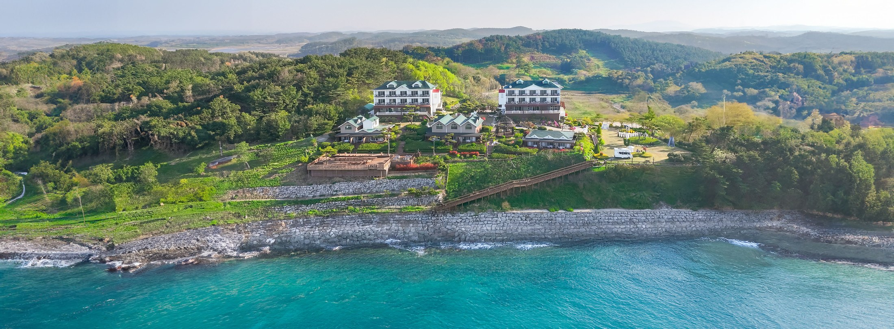
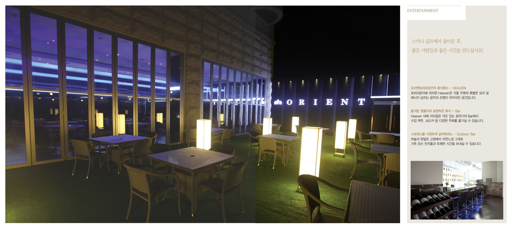
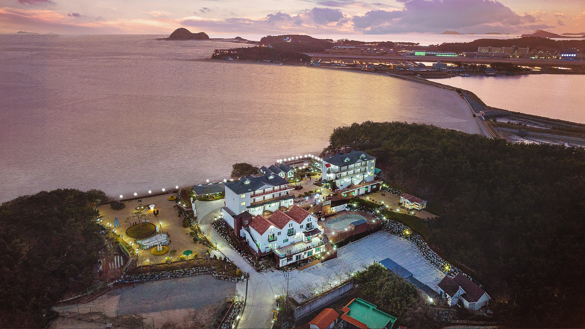

객실·서비스 운영
담당자가 달라져도,
서비스는 일관되게.
객실 관리부터 고객 응대, 시설 유지관리까지 현장의 업무를 연결합니다. 업무마다 제각각이던 기준을 정리하고, 고객이 만나는 서비스의 품질을 안정적으로 유지할 운영체계를 설계합니다.
- 객실 운영관리 기준 정리
- 고객 응대와 서비스 품질관리
- 업무별 운영 기준과 현장 관리체계 구성
호텔 운영·위탁관리
객실 관리와 고객 서비스, 인력 배치와 고정비를 하나의 운영체계로 연결합니다. 호텔·리조트를 직접 인수하고 운영해 온 경험으로, 시설에 맞는 개선 방향과 운영 방식을 설계합니다.

오리엔티브가 하는 일
일은 늘 바쁜데 역할은 모호하고, 객실은 팔리는데 비용 부담은 커지고 있나요? 현장의 업무와 사업의 숫자를 연결해, 무엇을 바꿔야 할지 구체적으로 정리합니다.
객실·서비스 운영
객실 관리부터 고객 응대, 시설 유지관리까지 현장의 업무를 연결합니다. 업무마다 제각각이던 기준을 정리하고, 고객이 만나는 서비스의 품질을 안정적으로 유지할 운영체계를 설계합니다.
인력·조직 운영
시설 규모와 실제 업무량에 맞춰 역할과 인력 배치를 설계합니다. 일이 몰리는 지점과 중복되는 업무를 정리해, 각 담당자가 자신의 역할을 분명하게 수행하도록 돕습니다.
고정비·수익구조 개선
인력 운영과 고정비, 객실 판매 구조를 함께 분석합니다. 매출에 비해 부담이 큰 비용과 개선할 항목을 구분하고, 운영 효율과 수익성을 높일 우선순위를 제안합니다.
운영성과 관리
객실 판매와 가동 상황, 비용의 흐름을 함께 읽습니다. 시설에서 관리해야 할 지표를 정리하고, 개선 전후의 변화를 확인할 수 있는 운영성과 관리 방향을 세웁니다.
시설에 맞는 운영 방식
사업자가 유지할 역할과 협력이 필요한 업무를 구분합니다. 시설의 특성, 현재 운영조직, 사업 목표에 따라 적합한 참여 범위를 함께 정합니다.
필요한 역량을 함께 연결합니다
고객 유입이 부족하면 판매와 멤버십을, 시설 경쟁력이 약해졌다면 공간 개선을 연결합니다. 오리엔티브의 사업 역량을 시설의 문제에 맞게 함께 구성합니다.
매출·마케팅 + 멤버십·제휴
객실 가격과 예약채널 전략에 그룹의 회원 기반과 제휴 판매 인프라를 연결합니다. 회원 전용 숙박상품과 제휴 프로모션으로 평일·비수기의 고객 접점을 넓힙니다.
숙박자산 개발·공간개선
객실과 공용공간의 리모델링, 공간 재구성 방향을 제안합니다. 필요한 투자와 공사비 효율, 개선 이후의 운영 수익성을 함께 고려합니다.
브랜드·복합사업 개발
F&B, 부대시설, 체험 프로그램과 이벤트 등 객실 외 수익모델을 발굴합니다. 시설의 특성과 고객 수요에 맞는 새로운 사업 구성을 기획합니다.
직접 운영하며 쌓아온 경험
오리엔트그룹은 2006년 경포콘도 객실 1개 인수에서 출발했습니다. 평창 리조트와 태안 숙박시설을 운영하며 객실 관리, 고객 서비스, 회원사업과 판매가 연결되는 숙박사업의 현장을 경험했습니다.

객실 관리와 고객 서비스, 회원제 판매를 함께 경험한 운영 현장입니다. 시설을 유지하고 고객을 맞이하며 객실을 판매하는 일의 연결을 이해하는 기반이 되었습니다.
평창 사업 이력 보기
객실과 부대시설의 상태, 고객 경험과 숙박상품의 판매 흐름을 함께 다루는 사업입니다. 시설의 특성에 맞는 운영과 판매를 연결하는 경험을 이어가고 있습니다.
태안 사업 이력 보기우리 숙소의 다음 운영
인력과 비용, 객실 판매, 서비스 관리, 위탁운영까지.
시설 유형과 객실 수, 현재 운영 방식과 고민을 알려주시면 시설에 필요한 개선 방향과 협력 범위를 함께 정리합니다.
위탁운영 및 연계 서비스의 수행 범위는 시설 현황과 계약 조건에 따라 협의합니다.